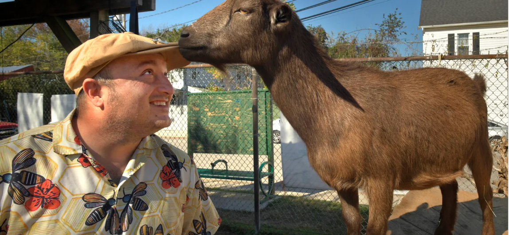

A DC park named for the man whose sacrifice helped spark a revolution
Reporter Allison Seymour visits Crispus Attucks Park — a hidden acre behind the rowhouses of Bloomingdale, reclaimed by its neighbors — and reads what visitors have left in the Little Yellow Journal.
Reported by Allison Seymour · With Alden E. Stoner, CEO of Nature Sacred
Broadcast and online · June 1, 2026
“… these journals are a way to show, … there is more that connects us than divides us.”
An acre the neighbors reclaimed, block by block.
Forty years ago the site was a burned-out building and cracked asphalt littered with abandoned cars. Neighborhood residents cleared it themselves and turned it into what people in Bloomingdale now call the secret park: 1.06 acres of flowers, trees, and grass running the length of a city block behind the rowhouses.
Crispus Attucks Park is a Sacred Place, with a Nature Sacred bench and a Little Yellow Journal beneath it. Seymour’s segment spends its closing minutes on the journal itself — the entries strangers leave for one another, which is where the park’s name and its present-day life meet.

Filbert Street Garden and goats “is where people come to breathe” in South Baltimore
Creating Sacred Spaces: Alden Stoner’s Guide to Community-Driven Healing
Health Gig, with Doro Bush Koch and Tricia Reilly Koch.
Every clip, interview, and broadcast
Thirty years of press, gathered in one place alongside stories from the network.
Working on a story? We're glad to help.
Interviews, photography, research findings, and introductions to Firesouls in your area.
Contact our team →Never miss a story.
Updates, stories, and inspiration from inside the movement—direct to your inbox. Follow along on Instagram and LinkedIn, too.
Sign up for our newsletter →